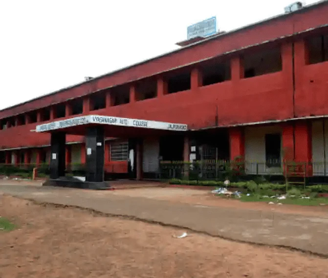

The Golden Days
Read in book
Life has few memories which never fade with the tides of time. In 1975, I finally opted to join the local college Vyasanagar College for intermediate study despite being selected by all top colleges in the State. It was primarily due to the precarious financial condition of the family. But, ultimately, it proved to be a bonanza for me.
My father, being a founding member of the college, I had the privilege of familiarity with the teaching and non-teaching staff. Besides, within a few days I became a sensation in the college on my own, so much so that I was being discussed among the peer groups as well as the teachers.
I was very prompt in replying to any question asked by the teachers in the class and standing out in the debate competition. One day I got a call from the Principal Dr. Gorachand Patnaik, an erudite scholar in his own right and an able administrator who subsequently adorned the position of Principal, Ravenshaw College, Director of Higher Education, and Vice Chancellor of Fakir Mohan University. He enquired about my studies and assured all help.
This relationship bloomed to be a catalyst in my subsequent life and like a father figure, he motivated me and shaped my destiny. I became his blue-eyed boy in the college and became a familiar face in the college for the next four years. All the teachers, staff and students paid attention to me. I excelled as a student, as a debater, a social worker and a leader. I was heading the NSS wing and contributed for various development projects of the college. From morning to evening I used to be present in the college and got associated with different activities.
I had free access not only to the Principal but to all the senior faculties and their homes. Many of them were friendly with my father and obviously they considered me like their own child. For some, I became their eldest child, taking snacks and lunch in their houses very often. I was always greeted with warmth and affection in their families. Besides the Principal Dr Patnaik, I fondly remember my association with Dr Kalpataru Sahu, Reader in Odia who was equally nice towards me. He is no more with us, but my association with his family is still intact.
The college was my grooming ground, and I enjoyed the love and goodwill of my teachers abundantly. I had free access to the library thanks to the generosity of Arjuni Bhai, the librarian, and his associates. In the intermediate examination, I topped in most of the subjects in the college and for the graduation faculties of different departments wanted me to take honors in their subject.
Finally, I chose to go for History and become a direct student of the Principal Dr Patnaik. During those days, the college was marching ahead under the able leadership of Dr Patnaik with introduction of honors classes in different subjects and for the first time receiving UGC grants for infrastructure and library. Out of the library grants, the college library received a good number of reference books in various subjects, including history. I had the privilege of accessing such books mostly by foreign authors under the guidance of the faculty members and the Principal himself.
Even I got these books issued in the name of the faculties with their consent and made use of the resources to my advantage. Eventually, I got a thorough grip on the subject and also mastered the art of presentation under the guidance of Dr Patnaik. It was to the point , brief and precise with a flair for language. My notes were approved and appreciated by the teachers, which enhanced my confidence level.
Few months before the university examination, I suffered from severe chest pain and had to stay in a private mess near the college instead of commuting daily from home. Dr Sahu accompanied me to our family physician Dr. Parameswara Nayak who loved me no less. I remained under his treatment. The teachers were all anxious about my health.
Thankfully, by the grace of God, I completed the examination as per schedule and came back home to the relief of my family members and the teachers. Few months down the line, the result was to be announced.
In those days ,we had to depend on the local telephone exchange for the results. They used to collect it from the University for the benefit of the students of the locality. On the fateful day in June 1979, I reached the telephone exchange to know the results and got elated to see the fairly good marks in different subjects and rushed to the Principal to share the good news.
He immediately asked about my results but unfortunately my name didn’t figure in the history honors results. I thought it might have been withheld. He was visibly upset for a moment and then consoled me by saying that I might have got first class since the first class merit list gets published separately and not college wise. He further confirmed that he had seen my answer sheets personally and was sure about me securing first class.
The college office was closed then, and he was supervising some construction work of the new UGC building. He rushed to his residence and instructed me to follow. Immediately he booked urgent calls both to the Controller of Examination and the Assessor of Utkal University. Few minutes later, the Assessor responded and assured me to get my results verified. The then Assessor was no other than the famous writer Santanu Kumar Acharya, with whom I developed a beautiful relationship later when I enrolled in Vani Vihar.
The phone rang again. The Assessor was again on the line. He informed me I secured first class honors with distinction and also stood seventh in the merit list. It was beyond my imagination, and I touched the feet of my mentor and guide in reverence and gratitude. When I reached home, my mother was almost in tears getting the news that my name didn’t figure in the result sheet. When I informed her the good news, he hugged me and tears of joy rolled down her cheeks. Life has so many surprises like this which add color to it.
Incidentally, a few years back, the college celebrated its golden jubilee, and it was a rare honor for me to be felicitated as one of the best alumni and my father as the only surviving founding member of the college.
Today, the college has become autonomous with PG classes and I have the distinction of becoming the President of the Governing Body of the College with the onerous responsibilities of reviving the past glories of the college and ensuring its all-round development.
Leave a thought
No account needed. Your name and comment appear publicly after approval.